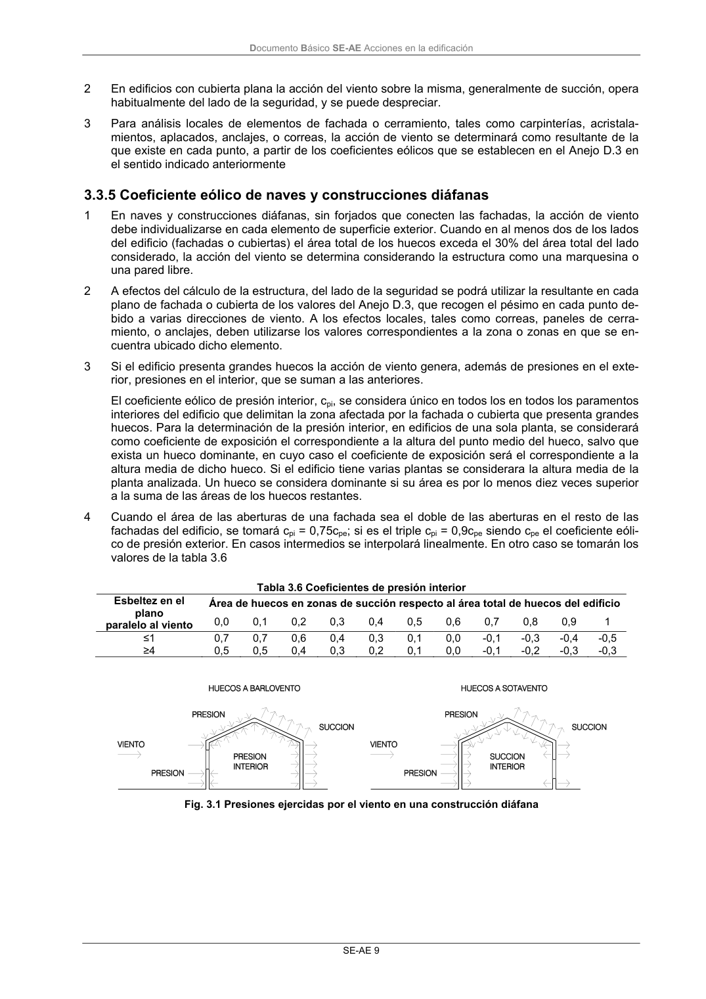
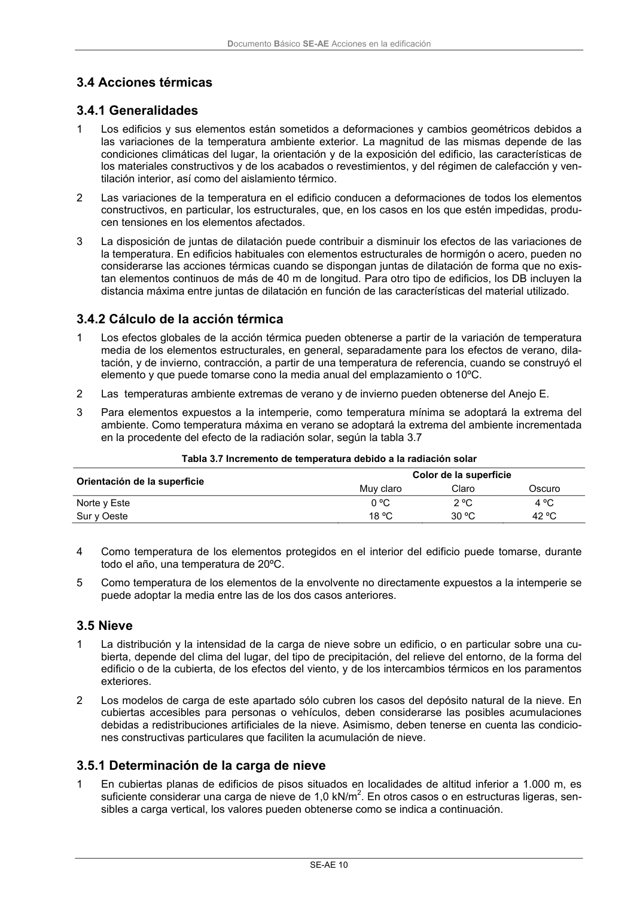

DB-SE-AE · 3.3.5 Coeficiente eólico de naves y construcciones diáfanas · versión 2009-04 · capa oficial
Formatos: JSON compacto · Markdown · PDF fuente
Ámbito del documento · texto del ámbito · documento y tablas
ID técnico a0023 · PDF pág. 13-14 · jerarquía no validada por persona · contrastado con el literal de la página 13 (candidato tipográfico); no validado por persona · padre: raíz
3.3.5 Coeficiente eólico de naves y construcciones diáfanas 1 En naves y construcciones diáfanas, sin forjados que conecten las fachadas, la acción de viento debe individualizarse en cada elemento de superficie exterior. Cuando en al menos dos de los lados del edificio (fachadas o cubiertas) el área total de los huecos exceda el 30% del área total del lado considerado, la acción del viento se determina considerando la estructura como una marquesina o una pared libre. 2 A efectos del cálculo de la estructura, del lado de la seguridad se podrá utilizar la resultante en cada plano de fachada o cubierta de los valores del Anejo D.3, que recogen el pésimo en cada punto de- bido a varias direcciones de viento. A los efectos locales, tales como correas, paneles de cerra- miento, o anclajes, deben utilizarse los valores correspondientes a la zona o zonas en que se en- cuentra ubicado dicho elemento. 3 Si el edificio presenta grandes huecos la acción de viento genera, además de presiones en el exte- rior, presiones en el interior, que se suman a las anteriores. El coeficiente eólico de presión interior, cpi, se considera único en todos los en todos los paramentos interiores del edificio que delimitan la zona afectada por la fachada o cubierta que presenta grandes huecos. Para la determinación de la presión interior, en edificios de una sola planta, se considerará como coeficiente de exposición el correspondiente a la altura del punto medio del hueco, salvo que exista un hueco dominante, en cuyo caso el coeficiente de exposición será el correspondiente a la altura media de dicho hueco. Si el edificio tiene varias plantas se considerara la altura media de la planta analizada. Un hueco se considera dominante si su área es por lo menos diez veces superior a la suma de las áreas de los huecos restantes. 4 Cuando el área de las aberturas de una fachada sea el doble de las aberturas en el resto de las fachadas del edificio, se tomará cpi = 0,75cpe; si es el triple cpi = 0,9cpe siendo cpe el coeficiente eóli- co de presión exterior. En casos intermedios se interpolará linealmente. En otro caso se tomarán los valores de la tabla 3.6 Tabla 3.6 Coeficientes de presión interior Área de huecos en zonas de succión respecto al área total de huecos del edificio Esbeltez en el plano paralelo al viento 0,0 0,1 0,2 0,3 0,4 0,5 0,6 0,7 0,8 0,9 1 ≤1 0,7 0,7 0,6 0,4 0,3 0,1 0,0 -0,1 -0,3 -0,4 -0,5 ≥4 0,5 0,5 0,4 0,3 0,2 0,1 0,0 -0,1 -0,2 -0,3 -0,3 Fig. 3.1 Presiones ejercidas por el viento en una construcción diáfana Documento Básico SE-AE Acciones en la edificación SE-AE 10


PDF fuente redistribuible: copia fiel enlazada en esta página (SHA256 verificado).